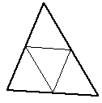
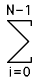

Polygons and meshesIn what follows are various notes and algorithms dealing with polygons and meshes.
Surface (polygonal) SimplificationWritten by Paul BourkeJuly 1997 The following describes a method for reducing the number of polygons making up a surface representation while still attempting to retain the fundamental form of the surface. The applications for this are obvious if performance improvements are being sought for rendering and/or interactive environments. The basic approach is to repeatedly remove the polygons with the shortest shared edge. Two polygons are removed on each step, the vertices of the remaining polygons are shifted to the midpoint of the shorted edge.
The following example illustrates the technique for a facet representation of a sphere. The initial sphere has 4000 facets, on each iteration the number of polygons is reduced by 1000. The initial sphere is obviously inefficient, to begin with, there are regions with much more detail than others (eg: the poles). If a smooth shaded rendering is being used then the model with 1000 facets is probably just as good as the original with 4 times the number of facets.
As expected, for severe reductions in the number of polygons the surface undergoes a smoothing and loss of detail. This is readily illustrated for a gridded cube.
Careful consideration needs to be given to the edges of non-manifold surfaces. A straightforward implementation will slowly eat away at the edge when the shortest facet edge is on the edge of the surface.
And finally, applied to a model of the human cortex.
Clipping Polygonal Facets
Written by Paul Bourke |
| Method | Additional Geometry | Comments |
|  | Increases the number of facets by 3 | Perhaps the most common splitting technique. Doesn't result in finer internal angles. |
 |
Doubles the number of facets | Simplest method, bisection. Normally the longest edge or the widest internal angle would be bisected. While it reduces long edges it also tends to produce narrow internal angles |
| 2 additional facets | The centroid becomes the new vertex. If the facet is part of a height field the centroid height would normally be the average of the 3 original vertex heights. | |
| Results in an identical but smaller triangular facet and three new 4 vertex facets. | Uncommon | |
| Yields three 4 vertex facets. | The centroid is usually used as the mid point. | |
| Gives a smaller 3 point facet and a new 4 point facet. | This is a common first approach for long thin facets, the cut is made along the two longest edges | |
| Subdivide a 4 point facet into two 4 point facets | Simple example of a more general repeated bisection of a facet. The longest opposite pair of edges are split if equal size facets are desirable. | |
| Results in a small 4 point facet and four new triangular facets. | Uncommon | |
| Bisection into two triangular facets | The simplest splitting of a 4 point facet. Most commonly used by rendering program to ensure all facets are planar. Results in facets with small internal angles. | |
| Gives three triangular facets. | The centroid is normally used. An improved technique to simple bisection for smoothing height fields. |
Facets, planes, normals, rendering
Written by Paul BourkeNovember 1992
|
The usual way of representing a bounded planar surface (facet) in computer graphic applications is as a sequence of vertices. Shading algorithms and ray-tracing generally requires knowledge of the normal to the facet, this is calculated by taking the cross product two of the edge vectors of the facet. The angle the normal makes with the light source vector determines the degree of shading of the facet. In particular, if the normal points towards the light source then the surface is brightly illuminated, if it points away from the light source then the surface is in shadow. |
A common problem arises because the vertices need then to be specified in a specific order. A common convention is they need to be ordered such that the normal points outwards. This assumes there is an "outer" and "inner" ie: that the object is closed.
|
The usual way of calculating the angle between the normal and light source vector involves taking the cross product between these two vectors giving the cosine of the angle between them. Some rendering packages simple use the absolute value of this angle thus shading the back side the same as the side facing the light source. |
Another technique which is common when you don't have control over the source of the facets nor the rendering package is to double up each facet, the duplicate having its vertices in the reverse order. These two sided facets can obviously make up objects which are not closed.
| The basic problem arises because facets/planes don't exist in real life, all planar surfaces have a finite thickness. This is similar to the issue of representing lines in ray-tracing packages....they must be turned into objects with finite thickness such as cylinders. Creating planes with a finite thickness has been recognised for a long time in Architectural modelling where creating walls from infinitely thin planes leads to all sorts of problems not encountered if their true thickness is used. |
Polygon types
Written by Paul BourkeJanuary 1993
There are a number of categories of polygons in common usage in computer modelling and graphics. The particular polygon type being used can have a dramatic effect on the complexity of many rendering and editing algorithms. For example, an algorithm for splitting a polygon into a number of 3 vertex facets is trivial for convex polygons and quite problematic for polygons with holes.
While most of the discussion will be with regard to polygons as bounded planes in 3D, the same ideas apply to polygons in 2D.
Some of the more frequently used categories will be listed and discussed below.
3 vertex facetThis is the simplest type of polygon. Perhaps one of the most important characteristics is the points lie on a plane, as such it is often the most fundamental primitive for 3D rendering applications which expect a single unambiguous normal for the whole polygonal region. | |
Rectangular facetRectangular or 4 vertex polygons are generated from gridded datasets and polygonal approximations of 2D surfaces. Many applications where such rectangular facets arise naturally don't ensure the vertices are coplanar, fortunately it is trivial to turn such a polygon into triangular and hence planar polygons. | |
Convex polygonThis is the simplest type of polygon with more than 3 or 4 vertices. | |
Concave polygonThis is the most general type of "simple" polygon, that is, without holes. | |
|
|
Complex polygonPolygons with holes are defined in a number of ways. The holes can be "tagged" as such, a common method is to define the vertices of the holes in a order different from that of the solid parts. For example the solid parts might be defined clockwise about the normal, the holes anticlockwise about the normal.Such polygons can be turned into concave polygons by introducing 2 coincident edges, between the solid and hole polygons. For multiple holes and concave solid pieces the coincident edges need to be taken between appropriate vertices to avoid making an overlapping polygon. |
|
|
Intersecting polygonThese somewhat perverse polygons normally get lumped in with complex polygons with holes. The example on the right is the most straight forward case, situations where the polygon covers part of itself are generally avoided and are not handled consistently by rendering engines. |
Determining whether or not a polygon (2D) has its vertices ordered clockwise or counter-clockwise
Written by Paul BourkeMarch 1998
The following describes a method for determining whether or not a polygon has its vertices ordered clockwise or anticlockwise for both convex and concave polygons. A polygon will be assumed to be described by N vertices, ordered
A simple test of vertex ordering for convex polygons is based on considerations of the cross product between adjacent edges. If the cross product is positive then it rises above the plane (z axis up out of the plane) and if negative then the cross product is into the plane.
= (xi - xi-1) * (yi+1 - yi) - (yi - yi-1) * (xi+1 - xi)
A positive cross product means we have a counter-clockwise polygon.
To determine the vertex ordering for concave polygons one can use a result from the calculation of polygon areas, where the area is given by

If the above expression is positive then the polygon is ordered counter clockwise otherwise if it is negative then the polygon vertices are ordered clockwise.
Test for concave/convex polygonFor a convex polygon all the cross products of adjacent edges will be the same sign, a concave polygon will have a mixture of cross product signs. |
- Example and test program for testing
whether a polygon is convex or concave. For MS, contributed by G. Adam Stanislav.
- Source Code by the author.
Clipping a line segment to a complex polygon
Written by Paul BourkeAugust 1997
The following describes a procedure for clipping a line segment to a complex polygon. Complex polygon refers to both concave polygons and polygons with holes.
Whether the requirement is to retain that portion of the line within the polygon or remove the portion of the polygon within the polygon the concept is the same.
Consider a parametric expression for the line segment between two
points P1 and P2.
Then all the points of intersection of this line segment with edges of the polygon can be calculated.
Arrange these points of intersection by increasing values of mu along the line. These points form pairs of edges alternatively inside and outside the polygon.
The only remaining ambiguity is whether the first point P1 of the line segment (mu = 0) is within or outside the polygon, see here for details.
Calculating the area of a 3D polygon
Written by Paul BourkeApril 2000
|
Area of a triangular facet
This simply stems from the definition of the cross product. |
|
|
Area of a quad facet (assume planar)
This is somewhat more interesting, it is left as an exercise to the reader that the quad formed by connecting the 4 midpoints of the edges is a parallelogram and further that the area of the quad is half the area of this parallelogram. For more information see Pierre Varignon who is credited with discovering this around 1730. |
|
|
Area of an arbitrary planar polygon
This general case is somewhat more difficult to derive. One approach is Stokes theorem, another is to decompose the polygon into triangles or quads. In the following N is the normal to the plane on which the polygon lies. |
|
Determining if a point lies on the interior of a polygon
Written by Paul BourkeNovember 1987
The following is a simple solution to the problem often encountered in computer graphics, determining whether or not a point (x,y) lies inside or outside a 2D polygonally bounded plane. This is necessary for example in applications such as polygon filling on raster devices, hatching in drafting software, and determining the intersection of multiple polygons.
Consider a polygon made up of N vertices (xi,yi) where i ranges from 0 to N-1. The last vertex (xN,yN) is assumed to be the same as the first vertex (x0,y0), that is, the polygon is closed. To determine the status of a point (xp,yp) consider a horizontal ray emanating from (xp,yp) and to the right. If the number of times this ray intersects the line segments making up the polygon is even then the point is outside the polygon. Whereas if the number of intersections is odd then the point (xp,yp) lies inside the polygon. The following shows the ray for some sample points and should make the technique clear.
Note: for the purposes of this discussion 0 will be considered even, the test for even or odd will be based on modulus 2, that is, if the number of intersections modulus 2 is 0 then the number is even, if it is 1 then it is odd.
The only trick is what happens in the special cases when an edge or vertex of the polygon lies on the ray from (xp,yp). The possible situations are illustrated below.
The thick lines above are not considered as valid intersections, the thin lines do count as intersections. Ignoring the case of an edge lying along the ray or an edge ending on the ray ensures that the endpoints are only counted once.
Note that this algorithm also works for polygons with holes as illustrated below
The following C function returns INSIDE or OUTSIDE indicating the status of a point P with respect to a polygon with N points.
#define MIN(x,y) (x < y ? x : y)
#define MAX(x,y) (x > y ? x : y)
#define INSIDE 0
#define OUTSIDE 1
typedef struct {
double x,y;
} Point;
int InsidePolygon(Point *polygon,int N,Point p)
{
int counter = 0;
int i;
double xinters;
Point p1,p2;
p1 = polygon[0];
for (i=1;i<=N;i++) {
p2 = polygon[i % N];
if (p.y > MIN(p1.y,p2.y)) {
if (p.y <= MAX(p1.y,p2.y)) {
if (p.x <= MAX(p1.x,p2.x)) {
if (p1.y != p2.y) {
xinters = (p.y-p1.y)*(p2.x-p1.x)/(p2.y-p1.y)+p1.x;
if (p1.x == p2.x || p.x <= xinters)
counter++;
}
}
}
}
p1 = p2;
}
if (counter % 2 == 0)
return(OUTSIDE);
else
return(INSIDE);
}
{kind=link}
The following code is by Randolph Franklin, it returns 1 for interior points and 0 for exterior points.
int pnpoly(int npol, float *xp, float *yp, float x, float y)
{
int i, j, c = 0;
for (i = 0, j = npol-1; i < npol; j = i++) {
if ((((yp[i] <= y) && (y < yp[j])) ||
((yp[j] <= y) && (y < yp[i]))) &&
(x < (xp[j] - xp[i]) * (y - yp[i]) / (yp[j] - yp[i]) + xp[i]))
c = !c;
}
return c;
}
Contribution by Alexander Motrichuk: InsidePolygonWithBounds.cpp.
Quote: "For most of the algorithms above there is a pathological case if the point being queried lies exactly on a vertex. The easiest way to cope with this is to test that as a separate process and make your own decision as to whether you want to consider them inside or outside."
Contribution in VBA by Giuseppe Iaria: InsidePolygon.txt
Contribution written in c# by Jerry Knauss: contains.c#.
Solution 2 (2D)Another solution forwarded by Philippe Reverdy is to compute the sum of the angles made between the test point and each pair of points making up the polygon. If this sum is 2pi then the point is an interior point, if 0 then the point is an exterior point. This also works for polygons with holes given the polygon is defined with a path made up of coincident edges into and out of the hole as is common practice in many CAD packages.
The inside/outside test might then be defined in C as
typedef struct {
int h,v;
} Point;
int InsidePolygon(Point *polygon,int n,Point p)
{
int i;
double angle=0;
Point p1,p2;
for (i=0;i<n;i++) {
p1.h = polygon[i].h - p.h;
p1.v = polygon[i].v - p.v;
p2.h = polygon[(i+1)%n].h - p.h;
p2.v = polygon[(i+1)%n].v - p.v;
angle += Angle2D(p1.h,p1.v,p2.h,p2.v);
}
if (ABS(angle) < PI)
return(FALSE);
else
return(TRUE);
}
/*
Return the angle between two vectors on a plane
The angle is from vector 1 to vector 2, positive anticlockwise
The result is between -pi -> pi
*/
double Angle2D(double x1, double y1, double x2, double y2)
{
double dtheta,theta1,theta2;
theta1 = atan2(y1,x1);
theta2 = atan2(y2,x2);
dtheta = theta2 - theta1;
while (dtheta > PI)
dtheta -= TWOPI;
while (dtheta < -PI)
dtheta += TWOPI;
return(dtheta);
}
Solution 3 (2D)
There are other solutions to this problem for polygons with special attributes. If the polygon is convex then one can consider the polygon as a "path" from the first vertex. A point is on the interior of this polygons if it is always on the same side of all the line segments making up the path.
Given a line segment between P0 (x0,y0) and P1 (x1,y1), another point P (x,y) has the following relationship to the line segment.
Compute
if it is less than 0 then P is to the right of the line segment, if greater than 0 it is to the left, if equal to 0 then it lies on the line segment.
|
This solution was motivated by solution 2 and correspondence with Reinier van Vliet and Remco Lam. To determine whether a point is on the interior of a convex polygon in 3D one might be tempted to first determine whether the point is on the plane, then determine it's interior status. Both of these can be accomplished at once by computing the sum of the angles between the test point (q below) and every pair of edge points p[i]->p[i+1]. This sum will only be 2pi if both the point is on the plane of the polygon AND on the interior. The angle sum will tend to 0 the further away from the polygon point q becomes. |
|
The following code snippet returns the angle sum between the test point q and all the vertex pairs. Note that the angle sum is returned in radians.
typedef struct {
double x,y,z;
} XYZ;
#define EPSILON 0.0000001
#define MODULUS(p) (sqrt(p.x*p.x + p.y*p.y + p.z*p.z))
#define TWOPI 6.283185307179586476925287
#define RTOD 57.2957795
double CalcAngleSum(XYZ q,XYZ *p,int n)
{
int i;
double m1,m2;
double anglesum=0,costheta;
XYZ p1,p2;
for (i=0;i<n;i++) {
p1.x = p[i].x - q.x;
p1.y = p[i].y - q.y;
p1.z = p[i].z - q.z;
p2.x = p[(i+1)%n].x - q.x;
p2.y = p[(i+1)%n].y - q.y;
p2.z = p[(i+1)%n].z - q.z;
m1 = MODULUS(p1);
m2 = MODULUS(p2);
if (m1*m2 <= EPSILON)
return(TWOPI); /* We are on a node, consider this inside */
else
costheta = (p1.x*p2.x + p1.y*p2.y + p1.z*p2.z) / (m1*m2);
anglesum += acos(costheta);
}
return(anglesum);
}
NoteFor most of the algorithms above there is a pathological case if the point being queries lies exactly on a vertex. The easiest way to cope with this is to test that as a separate process and make your own decision as to whether you want to consider them inside or outside.
Calculating the area and centroid of a polygon
Written by Paul BourkeJuly 1988
See also: centroid.pdf by Robert Nurnberg.
The problem of determining the area of a polygon seems at best messy but the final formula is particularly simple. The result and sample source code (C) will be presented here. Consider a polygon made up of line segments between N vertices (xi,yi), i=0 to N-1. The last vertex (xN,yN) is assumed to be the same as the first, ie: the polygon is closed.
The area is given by
Note for polygons with holes. The holes are usually defined by ordering the vertices of the enclosing polygon in the opposite direction to those of the holes. This algorithm still works except that the absolute value should be taken after adding the polygon area to the area of all the holes. That is, the holes areas will be of opposite sign to the bounding polygon area.
The sign of the area expression above (without the absolute value) can be used to determine the ordering of the vertices of the polygon. If the sign is positive then the polygon vertices are ordered counter clockwise about the normal, otherwise clockwise.
To derive this solution, project lines from each vertex to some horizontal line below the lowest part of the polygon. The enclosed region from each line segment is made up of a triangle and rectangle. Sum these areas together noting that the areas outside the polygon eventually cancel as the polygon loops around to the beginning.
The only restriction that will be placed on the polygon for this technique to work is that the polygon must not be self intersecting, for example the solution will fail in the following cases.
Centroid
The centroid is also known as the "centre of gravity" or the "center of mass". The position of the centroid assuming the polygon to be made of a material of uniform density is given below. As in the calculation of the area above, xN is assumed to be x0, in other words the polygon is closed.
Centroid of a 3D shell described by 3 vertex facets
The centroid C of a 3D object made up of a collection of N triangular faces with vertices (ai,bi,ci) is given below. Ri is the average of the vertices of the i'th face and Ai is twice the area of the i'th face. Note the faces are assumed to be thin sheets of uniform mass, they need not be connected or form a solid object. This reduces to the equations above for a 2D 3 vertex polygon.
Second moment of a polygon
The following assume anticlockwise orientated polygon vertices, use the negative value for clockwise polygons.
| Ix = |  | [ yi2 + yi yi+1 + yi+12 ] [ xi yi+1 - xi+1 yi ] |
| Iy = | [ xi2 + xi xi+1 + xi+12 ] [ xi yi+1 - xi+1 yi ] |
| 2 Ixy = | [ xi yi+1 + 2 xi yi + 2 xi+1 yi+1 + xi+1 yi ] [ xi yi+1 - xi+1 yi ] |
Sample source code
- This C function returns the area of a polygon.
- VBA version conributed by Rui Vaz Rodrigues
- JAVA code submitted by Ramón Talavera.
- PolygonUtilities.java contributed by Christopher Fuhrman
- Pascal/Dephi example by Rodrigo Alves Pons.
- Basic version also by Rodrigo Alves Pons.
- JavaScript by Raymond Hill.
- Python and example by Jorg Rødscø.
Determining whether a line segment intersects a 3 vertex facetWritten by Paul BourkeFebruary 1997 The following will find the intersection point (if it exists) between a line segment and a planar 3 vertex facet. The mathematics and solution can also be used to find the intersection between a plane and line, a simpler problem. The intersection between more complex polygons can be found by first triangulating them into multiple 3 vertex facets. |
|
Source code will be provided at the end, it illustrates the solution more than being written for efficiency. The labeling and naming conventions for the line segment and the facet are shown in the following diagram
The procedure will be implemented given the line segment defined by its two end points and the facet bounded by its three vertices.
The solution involves the following steps- Check the line and plane are not parallel
- Find the intersection of the line, on which the given line segment
lies, with the plane containing the facet
- Check that the intersection point lies along the line segment
- Check that the intersection point lies within the facet
The intersection point P is found by substituting the equation for the line P = P1 + mu (P2 - P1) into the equation for the plane Ax + By + Cz + D = 0.
Note that the values of A,B,C are the components of the normal to the plane which can be found by taking the cross product of any two normalised edge vectors, for example
Then D is found by substituting one vertex into the equation for the plane for example
This gives an expression for mu from which the point of intersection P can be found using the equation of the line.
If the denominator above is 0 then the line is parallel to the plane and they don't intersect. For the intersection point to lie on the line segment, mu must be between 0 and 1.
Lastly, we need to check whether or not the intersection point lies within the planar facet bounded by Pa, Pb, Pc
|
The method used here relies on the fact that the sum of the internal angles of a point on the interior of a triangle is 2pi, points outside the triangular facet will have lower angle sums. |
|
If we form the unit vectors Pa1, Pa2, Pa3 as follows (P is the point being tested to see if it is in the interior)
-
Pa1 = (Pa - P) / |(Pa - P)|
Pa2 = (Pb - P) / |(Pb - P)|
Pa3 = (Pc - P) / |(Pc - P)|
the angles are
-
a1 = acos(Pa1 dot Pa2)
a2 = acos(Pa2 dot Pa3)
a3 = acos(Pa3 dot Pa1)
Source code
/*
Determine whether or not the line segment p1,p2
Intersects the 3 vertex facet bounded by pa,pb,pc
Return true/false and the intersection point p
The equation of the line is p = p1 + mu (p2 - p1)
The equation of the plane is a x + b y + c z + d = 0
n.x x + n.y y + n.z z + d = 0
*/
int LineFacet(p1,p2,pa,pb,pc,p)
XYZ p1,p2,pa,pb,pc,*p;
{
double d;
double a1,a2,a3;
double total,denom,mu;
XYZ n,pa1,pa2,pa3;
/* Calculate the parameters for the plane */
n.x = (pb.y - pa.y)*(pc.z - pa.z) - (pb.z - pa.z)*(pc.y - pa.y);
n.y = (pb.z - pa.z)*(pc.x - pa.x) - (pb.x - pa.x)*(pc.z - pa.z);
n.z = (pb.x - pa.x)*(pc.y - pa.y) - (pb.y - pa.y)*(pc.x - pa.x);
Normalise(&n);
d = - n.x * pa.x - n.y * pa.y - n.z * pa.z;
/* Calculate the position on the line that intersects the plane */
denom = n.x * (p2.x - p1.x) + n.y * (p2.y - p1.y) + n.z * (p2.z - p1.z);
if (ABS(denom) < EPS) /* Line and plane don't intersect */
return(FALSE);
mu = - (d + n.x * p1.x + n.y * p1.y + n.z * p1.z) / denom;
p->x = p1.x + mu * (p2.x - p1.x);
p->y = p1.y + mu * (p2.y - p1.y);
p->z = p1.z + mu * (p2.z - p1.z);
if (mu < 0 || mu > 1) /* Intersection not along line segment */
return(FALSE);
/* Determine whether or not the intersection point is bounded by pa,pb,pc */
pa1.x = pa.x - p->x;
pa1.y = pa.y - p->y;
pa1.z = pa.z - p->z;
Normalise(&pa1);
pa2.x = pb.x - p->x;
pa2.y = pb.y - p->y;
pa2.z = pb.z - p->z;
Normalise(&pa2);
pa3.x = pc.x - p->x;
pa3.y = pc.y - p->y;
pa3.z = pc.z - p->z;
Normalise(&pa3);
a1 = pa1.x*pa2.x + pa1.y*pa2.y + pa1.z*pa2.z;
a2 = pa2.x*pa3.x + pa2.y*pa3.y + pa2.z*pa3.z;
a3 = pa3.x*pa1.x + pa3.y*pa1.y + pa3.z*pa1.z;
total = (acos(a1) + acos(a2) + acos(a3)) * RTOD;
if (ABS(total - 360) > EPS)
return(FALSE);
return(TRUE);
}
Eulers number and closed surfaces
Written by Paul BourkeJanuary 1997
Eulers number for geometry made up of planar polygons which are defined in terms of edges and vertices is
V - E + F
Where V, E, and F are the number of vertices, edges, and faces respectively.
For a closed surface the Eulers number is always equal to 2.
This forms a simple test for the closure of computer generated facet geometry.
"EAR" method for decomposiing polygons into triangles
Written by Paul BourkeApril 2018
The so called "ear clipping" algorithm is a method for decomposing a simple polygon (no holes or crossings) into a set of triangular parts. An "ear" is defined as a triangle where two edges are on the polygon boundary and the third edge is contained within the polygon. The method relies on the two ear theorem, that is, any simple polygon (with more than 3 edges) consists of at least 2 ears. Note that the polygon is not required to be 2D but if in 3D the vertices must all lie on a plane. The polygon may have concave portions.
An example of an ear shown for the polygon below. Note that this particular polygon has a total of 5 ears.
The process of decomposing by repeatedly clipping ears is shown below. Note that both the exact order and shape of the triangles are created depends on the order the ears are found.